SYMPHONY: Enabling Compute-Memory Disaggregation in LLM Serving Systems
总结
大型语言模型（LLM）驱动的聊天机器人和智能体应用需要跨多轮对话维护状态，每个请求都会生成存储 token 级状态的 KV cache。现有系统要么丢弃并重算缓存，要么将其卸载到主机内存，两者均存在高延迟、负载不均衡和可扩展性受限等问题。SYMPHONY 提出了一种解耦计算与 KV cache 存储的 disaggregated 内存管理方案，通过 advisory request（建议性请求）实现预取，在不牺牲延迟的前提下实现细粒度的请求级负载均衡。
As-is: 当前 LLM 服务系统主要采用两种策略处理多轮工作负载。第一种是"丢弃-重算"策略（如 vLLM、TensorRT-LLM），在请求结束时丢弃所有 KV cache 状态，新请求到达时从头重算整个会话的缓存——在 ShareGPT 数据集中，超过 99% 的 token 需要被冗余重算，对话超过三轮后超过 50% 的 prefill token 是浪费的。第二种是"卸载"策略（如 InferCept），将 KV cache 卸载到主机内存或磁盘，但这带来两个根本性缺陷：一是大状态传输导致高延迟，二是强制会话粘性（session stickiness），即同一会话的所有请求必须路由到同一节点，导致严重的负载不均衡——最繁忙节点的负载可达中位数的 3.1 倍，节点间请求差异可达 300 个。此外，主机内存容量有限（如服务 LLaMA-3.1-405B 时，256GB 主存仅能存储约 266K token），难以支撑大规模并发会话。
To-be: SYMPHONY 通过 disaggregated 内存管理实现了计算与存储的解耦，在不牺牲延迟的前提下提供三大优势：（i）细粒度请求级负载均衡，（ii）消除冗余重算，（iii）计算与内存独立扩展。在 LLaMA-3.1-8B 模型上，SYMPHONY 相比 vLLM 将平均端到端延迟降低 2.4 倍，在相同 GPU 资源下可服务 4 倍以上的用户（64 用户 vs 256 用户，TPOT 分别为 18ms 和 20.5ms）。即使面对 Lumnix+InferCept 的强联合基线，SYMPHONY 仍实现高达 1.6 倍的加速；相比 CacheGen 的有损压缩方案也有约 35% 的提升。
背景
LLM 推理因其自回归特性而本质上是有状态的：每个请求生成 KV cache 存储 token 级状态供后续生成使用。随着模型规模和上下文长度增长，KV cache 已成为主要瓶颈——例如 LLaMA-3.1-70B 模型在 128K 上下文下需要 20GB（INT8）的缓存空间，在 32K 上下文下也需要 5GB。
LLM 推理分为两个阶段：prefill 阶段处理 prompt 并构建 KV cache（计算密集型），decode 阶段利用缓存迭代生成 token（内存带宽密集型）。已有工作探索了硬件利用和调度策略优化，包括 prefill/decode 分离、延迟感知调度、公平性调度和预测性批处理等，但这些工作均假设请求是"无状态"的，即每个请求独立于先前状态——这一假设对大多数 LLM 工作负载并不成立。
论文分析了两种代表性应用的状态需求：
聊天机器人：用户通过多轮对话与模型交互，每轮需要访问之前所有输入和响应的 KV cache。对 ShareGPT 数据集的分析显示，73.4% 的对话是多轮的，部分对话甚至超过 400 轮。
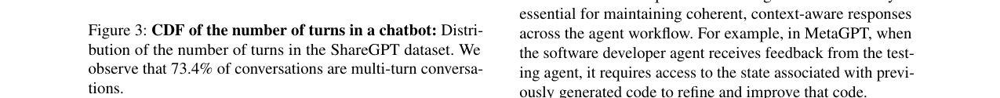
智能体：多个 LLM 相互交互以完成高级目标（如 MetaGPT、ChatDev 中的软件开发任务）。每个智能体需要访问先前所有交互的 prompt 和 KV cache，以维持上下文连贯性。
现有状态管理机制存在三种策略，各有缺陷：
1. 保留（Retain）：将 KV cache 保留在 GPU 内存中，但会迅速耗尽 HBM。例如在 LLaMA-3-8B 上批处理 54 个请求时，GPU HBM 即达到饱和。
2. 重算（Recompute）：将每个请求视为新请求，从头重算 KV cache。在 ShareGPT 中，超过三轮的对话会冗余重算超过 50% 的 prefill token。
3. 交换（Swap）：在 GPU 和主机内存之间交换 KV cache。虽然可将 prefill 时间降低 4.9 倍、decode 时间降低 1.68 倍（LLaMA-7B），但存在两个根本限制：一是会话粘性导致负载不均衡，二是传输到慢速存储（磁盘或远程）会产生不可接受的开销。
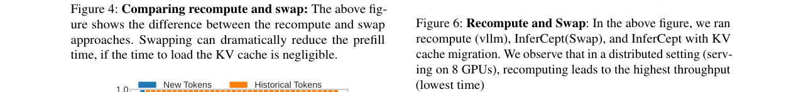
论文指出，LLM 多轮工作负载的状态管理挑战与数据仓库和云计算中有状态工作负载的长期问题类似。在那些领域，通过解耦计算与状态（如 Snowflake、AuroraDB 的 disaggregated 数据库，Lambda 函数的 serverless 范式）实现了细粒度弹性、资源独立性和成本效率。论文主张 LLM 多轮服务也需要类似的计算-内存解耦转变。
问题
SYMPHONY 要解决的核心问题是：如何在不牺牲延迟的前提下实现 LLM 服务的计算-内存解耦。
传统的计算-内存解耦通常因数据移动而遭受高延迟——这在 Lambda 函数中表现为冷启动，在云数据仓库中表现为查询缓慢。对于面向用户的多轮 LLM 应用，严格的延迟预算是不可协商的，因此核心需求是：解耦计算与状态的同时不牺牲延迟。
具体而言，现有方案面临以下痛点：
负载不均衡问题：在 8 个 GPU 上服务 1024 个并发用户时，使用 InferCept（基于卸载的系统），最繁忙 GPU 与最空闲 GPU 之间的请求差异可达 300 个，表明有状态 LLM 服务会导致严重的负载不均衡。
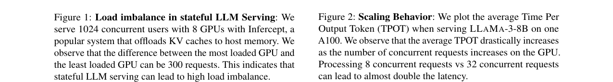
延迟随并发急剧恶化：在单个 A100 上服务 LLaMA-3-8B 时，处理 8 个并发请求与 32 个并发请求的 TPOT 差异接近两倍，说明负载增加会显著影响延迟。
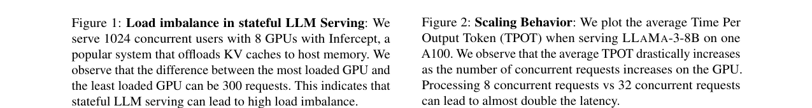
KV cache 迁移开销大：跨节点迁移 KV cache 需要网络传输，缓存可达数十 GB，迁移速度慢，导致请求必须等待缓存移动完成，降低吞吐量。在分布式设置（8 GPU）中，重算（vLLM）反而比带迁移的 InferCept 具有更高吞吐量（更低时间），说明迁移开销甚至超过了重算的开销。
主机内存容量限制：服务 LLaMA-3.1-405B 时，256GB 主存仅能存储约 266K token，而 ShareGPT 平均会话为 2.2K token，单节点最多只能支持 108 个并发会话，凸显了利用更慢但更大容量存储层的必要性。
解决方案
SYMPHONY 的核心洞察是：许多 LLM 工作负载的交互式和结构化特性提供了关于未来请求模式的提示。论文将这些信号称为 advisory request（建议性请求），利用它们可以将 KV cache 预取移出关键路径，从而隐藏数据移动延迟。
Advisory Request 的来源
聊天机器人场景：用户在提交查询前需要先在输入框中打字，这引入了数秒的自然延迟。通过对聊天界面进行轻微修改，可以在用户开始打字时触发 advisory 信号。分析 ShareGPT 数据集显示，此类请求平均比对应推理请求早到 11.3 秒，为预取 KV cache 提供了充足时间。Advisory request 的格式包含 session_id、model_id、expected_arrival（为 None）、ordered（为 False）和 priority 等字段。
智能体场景：智能体工作负载可表示为调用图（call graph），捕获每个智能体的调用顺序。通过离线 profiling 确定智能体调用序列后，在运行时当某个智能体执行时，立即为其所有下游智能体发送 advisory request。例如在 MetaGPT 中，软件工程师智能体执行时，会向程序经理和 QA 工程师发送 advisory request。在 4 个 A100 上评估 MetaGPT 发现，advisory request 平均比实际推理早到 5.8 秒。
Advisory Request 的局限性
论文深入分析了 advisory request 在实际使用中面临的三大挑战：
1. 缺乏时序和排序信息：advisory request 仅暗示某会话可能有请求到达，但不保证到达时间或相对其他会话的顺序，也不提供内存需求信息（prompt 长度和生成长度均未知）。例如，会话 A 的 advisory 触发后 KV cache 占满 GPU HBM，随后会话 B 的 advisory 到达但内存已满——而 B 的实际请求可能先于 A 到达。
2. 内存需求估计不精确：GPU 内存需求取决于 prompt 和生成 token 数量，但生成长度无法预先知道。一个正在处理的请求的 KV cache 可能持续增长，最终耗尽所有可用内存，导致预取的其他会话缓存无处安放。
3. 不可靠性：advisory request 可能是虚假的——用户可能开始打字但最终放弃提交请求，导致无对应推理请求的 spurious advisory。
系统架构
SYMPHONY 面向分布式 disaggregated 设置，包含从 GPU 内存、主机内存、磁盘、集群中其他节点的磁盘存储到 blob 存储的多层内存层级。系统由两个核心组件构成：
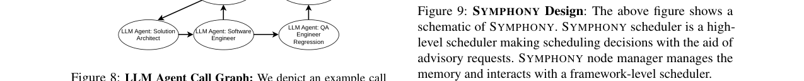
SYMPHONY Scheduler（全局调度器）：作为顶层调度器，提供三个公共接口——推理接口（接受 LLM 推理请求）、advisory 接口（接受 advisory 请求）和失效接口（撤销先前被视为 spurious 的 advisory 请求）。调度器拥有 SYMPHONY 状态的完整视图，负责协调各节点控制器之间的状态移动决策。收到 advisory request 后，调度器执行调度策略，将 KV cache 位置信息附加到 advisory request 中并转发给目标节点的 node manager。当实际推理请求到达时，调度器将其路由到处理对应 advisory request 时确定的节点。默认采用简单的负载均衡策略（均匀分配请求），但也支持可定制的调度策略。
SYMPHONY Node Manager（节点管理器）：驻留在每个节点上，管理 SYMPHONY 的分层内存系统。它处理四类请求：调度器转发的 advisory 请求、LLM 推理请求、来自其他 node manager 的 KV cache 获取请求、以及失效请求。收到 advisory request 后，node manager 验证缓存位置——若缓存不在当前节点则发起跨节点获取；若本地可用则在内存约束下将其移至最快的内存层级。
三大关键机制
1. Priority-Based KV Cache Management（基于优先级的 KV cache 管理）
面对 advisory request 信息不足的问题，SYMPHONY 不直接按会话优先级管理缓存，而是在内存压力下在请求内部做驱逐决策——优先保留关键路径上的缓存，驱逐可通过前向传播重叠来隐藏延迟的缓存。
该方案利用了 LLM 的逐层结构：如果早期层的 KV cache 可用，推理可以在后续层缓存预取的同时开始。因此缓存按层优先级管理，低层块分配更高优先级（因为它们最先被需要）。当多个 advisory request 为不同会话到达时，系统会先将所有会话的低层缓存放入 HBM，推迟高层缓存直到对应请求到达。在内存压力下，SYMPHONY 会驱逐最近最少使用请求的最后一层 KV cache。
2. Cooperative Memory Scheduling（协同内存管理）
为解决内存需求估计不精确的问题，SYMPHONY 的 node manager 与框架级调度器（如 vLLM、TensorRT-LLM）联合管理 GPU 内存，根据 HBM 需求动态释放容量。
具体而言，node manager 会机会主义地用 KV cache 填充空闲 GPU 内存。当出现内存压力时，服务库可以通过从 HBM 中清除缓存来覆盖该空间，而无需额外传输成本（因为副本已存在于主机内存中）。驱逐优先级为：先丢弃后层缓存，然后丢弃最近最少使用请求的 KV cache。协同管理仅应用于 GPU HBM，同时在最慢的层级（磁盘或远程 blob 存储）始终维护完整的 KV cache 副本以保证持久性。后台线程持续将新生成的缓存写入低层级以保持更新。
3. Layer-wise Reads and Writes（逐层异步读写）
当利用主机内存等具有较高访问延迟的存储介质时，读写 KV cache 会引入显著开销。SYMPHONY 采用受先前工作启发的逐层异步读写技术：DNN 逐层处理，仅需访问当前计算层的 KV cache。系统允许在某一层的推理执行期间并行加载即将需要的缓存并存储已处理的缓存，通过使读取和计算并行来减少慢速读写造成的瓶颈。
工作示例
论文通过一个具体示例说明 SYMPHONY 的优化：假设 Node-1 服务 2 个请求，Node-2 服务 4 个请求。Session ID:1 的 advisory 到达时，调度器将其分配给 Node-1 以均衡负载，但 KV cache 在 Node-2 上。
- Case 1（GPU 内存充足）：Node-1 的 node manager 将 KV cache 移至 GPU、主机内存和磁盘，确保快速访问。
- Case 2（GPU 内存充足但压力增加）：初始移至 GPU，随内存压力增大，协同调度按优先级驱逐缓存。推理请求到达时，逐层异步读取机制从主机内存增量加载所需数据。
- Case 3（无 GPU 内存可用）：KV cache 仅移至主机内存和磁盘，推理时通过异步逐层读取从主机内存逐步获取数据。
工作负载集成
聊天机器人：仅需 3 行 JavaScript 代码即可集成 advisory request——在聊天框的 input 事件触发时调用 `symphony.advisory_request(event.target.session)`。
智能体服务：首先对小规模代表性工作负载进行 profiling 以捕获智能体工作流图。SYMPHONY 为每个智能体维护查找表，记录其可能的后续智能体。推理时向所有潜在下游智能体发送 advisory request，触发状态预取。虽然其中一个可能是误报，但 SYMPHONY 的优化能高效处理此类 spurious advisory，对吞吐量影响可忽略。
测试结果
实验设置
- 测试环境：2 个节点，每节点 4 块 NVIDIA A100 GPU（80GB HBM）、256GB DRAM、4TB SSD，节点间通过 100Gbps 以太网连接。
- 模型：LLaMA-3.1-8B（128K 上下文）和 LLaMA-2-13B（32K 上下文）。
- 数据集：ShareGPT（真实 ChatGPT 会话，缺乏到达时间，通过估算阅读和打字速度生成）和 BurstGPT（有到达模式但无会话归属信息）。智能体评估使用 MetaGPT 框架。
- 基线系统：vLLM（重算）、InferCept（卸载到主机内存）、Llumnix（迭代级调度）、Llumnix+InferCept（联合基线）、LMCache（有损压缩）。
- 指标：TPOT（每输出 token 时间）、TTFT（首 token 时间）、每秒请求数。
- 实现：约 2400 行 Python 代码，使用 gRPC 集成调度器与 node manager，各 node manager 之间互联以支持按需 KV cache 迁移。
主要结果
TPOT（每输出 token 时间）：在 LLaMA-3.1-8B 上，SYMPHONY 相比 vLLM 降低 TPOT 1.4×至 1.9×，相比 InferCept 加速最高 2.5×，相比 Llumnix 加速最高 1.8×，相比 Llumnix+InferCept 加速最高 1.6×。在 LLaMA-2-13B 上，TPOT 加速最高 2.6×。改进主要来自两点：消除冗余计算和更快的 prefill 阶段使更多请求更快进入 decode 阶段。

TTFT（首 token 时间）：SYMPHONY 相比 vLLM 和 InferCept 将 TTFT 降低最高 2.4×。vLLM 因重算先前请求的 KV cache 而产生浪费性 prefill 操作；InferCept 虽避免浪费性 prefill 但因负载不均衡导致 decode 缓慢；Llumnix 同样需要重算；Llumnix+InferCept 虽能从主机内存读取缓存，但 Llumnix 调度器在前几个 decode 步骤中等待 KV cache 迁移，导致 TTFT 与 InferCept 类似。
吞吐量（每秒请求数）：SYMPHONY 在保持相似 TPOT 的前提下可服务高达 8 倍的用户数。例如 vLLM 服务 64 用户时 TPOT 为 18ms，而 SYMPHONY 服务 512 用户时 TPOT 仅 20.5ms，使用相同数量 GPU。相比 InferCept，SYMPHONY 可处理超过 4.2 倍的用户。
BurstGPT 数据集：在 BurstGPT 数据集上，SYMPHONY 提供最高 2.5 倍的加速，验证了其在不同工作负载模式下的有效性。
与 LMCache 对比：SYMPHONY 相比 LMCache（有损压缩方案）提供最高 35% 的加速，得益于 advisory request 的预取能力。
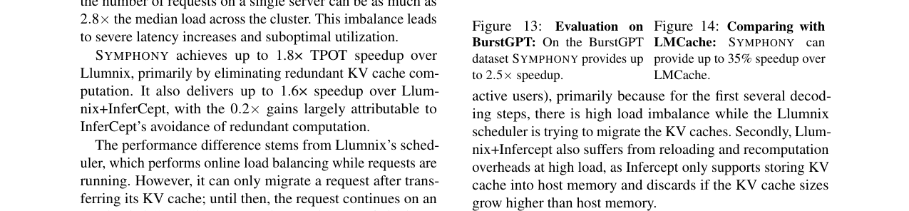
负载均衡：在 256 个并发用户的负载下，SYMPHONY 和 vLLM 均能保持负载均衡，因为两者都执行无状态服务。而 InferCept 和 Llumnix+InferCept 因会话粘性导致负载不均衡。
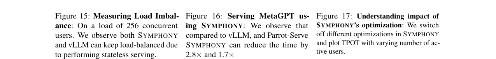
智能体工作负载：在 MetaGPT 上，SYMPHONY 相比 vLLM 将时间减少 2.8×，相比 Parrot-Serve 减少 1.7×。

消融实验
论文通过关闭不同优化来理解各组件的贡献：
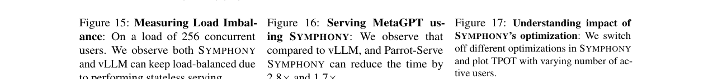
鲁棒性分析
Advisory request 缺失的影响：当 10% 的请求未发送 advisory request 时，延迟仅下降约 6%（3.1ms）。若所有 advisory request 均缺失（100%），SYMPHONY 退化为有状态基线。
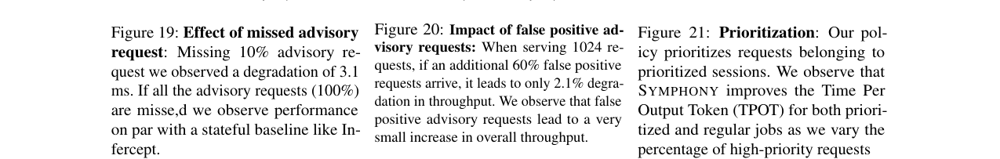
虚假 advisory request 的影响：在服务 1024 个请求时，即使额外 60% 的虚假 advisory request 到达，也仅导致 2.1% 的延迟增加，表明 SYMPHONY 的优先级管理和协同调度能有效处理 spurious advisory。
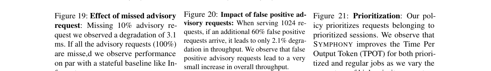
请求优先级调度：SYMPHONY 的解耦内存层支持请求级优先级调度——高优先级请求可通过 advisory request 均匀迁移到各节点，低优先级请求仅在其执行影响延迟时选择性暂停。实验表明该策略改善了高优先级请求的 TPOT，同时不会显著影响非优先级请求。
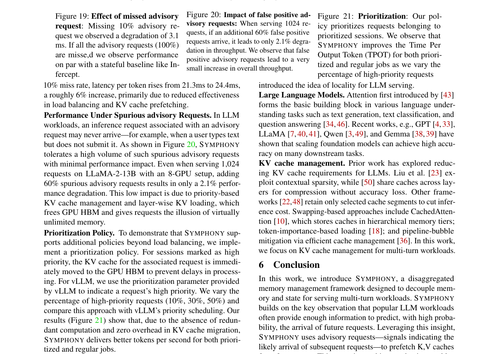
局限性
论文坦诚指出 SYMPHONY 的局限：（1）假设 advisory request 足够早到达以允许 KV cache 迁移，极端情况下性能可能受影响；（2）advisory request 可能存在 false negative（如网络丢包导致未发送），此时 SYMPHONY 退化为 best-effort 服务；（3）未考虑恶意攻击者发送大量 spurious advisory request 的 DDoS 场景，但指出可通过识别"获取并清除但未使用的缓存"来应用 DDoS 缓解技术。